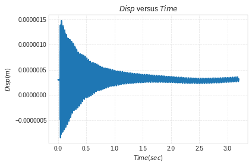
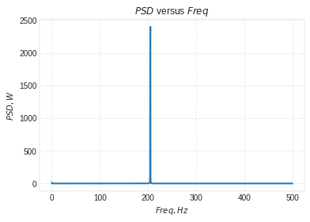
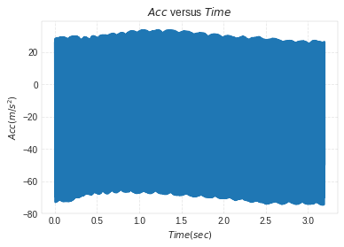
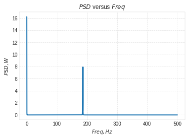
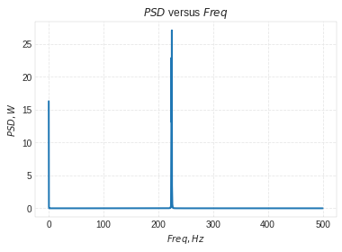

Lab 3¶
Computation of Rotating Unbalance¶
In [72]:
%load_ext autoreload
%autoreload 2
import vibration_toolbox as vtb
#from vibration_toolbox import sdof_cf
import matplotlib.pyplot as plt
import numpy as np
import scipy.io as sio
import math as math
import scipy.linalg as la
The autoreload extension is already loaded. To reload it, use:
%reload_ext autoreload
Geometry and Material Properties¶
In [73]:
n=40#no: of amplitudes to be considered in the experimental plots for analysis
Plotting Experimental Data¶
In [74]:
# Acc vs Time
%matplotlib inline
mat_contents=sio.loadmat('Case3-1.mat')
Time = mat_contents['Time_domain']
b = mat_contents['Time_chan_2']
# The acceleration values from Bobcat will be in Gs. So, to convert them to m/s^2,
# we will have to multiply the vector by 9.81
Acc=b*9.81
plt.plot(Time,Acc)
plt.grid('on')
plt.ylabel('$Acc(m/s^2)$')
plt.xlabel('$Time(sec)$')
plt.title('$Acc$ versus $Time$')
plt.show()

In [75]:
# Disp vs Time
Td= (Time[n]-Time[0])/n
Wd=(2*math.pi)/Td
Disp=Acc/(-Wd**2)
plt.plot(Time,Disp)
plt.grid('on')
plt.ylabel('$Disp(m)$')
plt.xlabel('$Time(sec)$')
plt.title('$Disp$ versus $Time$')
plt.show()

In [76]:
# Mag vs Freq
%matplotlib inline
mat_contents=sio.loadmat('Case3-1.mat')
c = mat_contents['Freq_domain']
d = mat_contents['Hf_chan_2']
H= (20)*(np.log10(np.abs(d)))
plt.plot(c,H)
plt.grid('on')
plt.xlabel('$Freq,Hz$')
plt.ylabel('$H,dB$')
plt.title('$Magn$ versus $Freq$')
plt.show()

Experimental Data Analysis¶
Using Vibration Toolbox¶
In [77]:
%matplotlib inline
mat_contents=sio.loadmat('Case3-1.mat')
f = mat_contents['Freq_domain']
TF = mat_contents['Hf_chan_2']
Fmin=70
Fmax=125
if Fmin is None:
inlow = 0
else:
inlow = Fmin
if Fmax is None:
inhigh = np.size(f)
else:
inhigh = Fmax
if f[inlow] == 0:
inlow = 1
f = f[inlow:inhigh,:]
TF = TF[inlow:inhigh,:]
R = TF
y = np.amax(np.abs(TF))
cin = np.argmax(np.abs(TF))
#works
ll = np.size(f)
w = f*2*np.pi*1j
w2 = w*0
R3 = R*0
for i in range(1, ll+1):
R3[i-1] = np.conj(R[ll-i])
w2[i-1] = np.conj(w[ll-i])
# for i in range(0, ll):
# print(i)
# R3[i] = np.conj(R[ll-i])
# w2[i] = np.conj(w[ll-i])
w = np.vstack((w2,w))
R = np.vstack((R3,R))
N = 2
x, y = np.meshgrid(np.arange(0,N+1),R)
x, w2d = np.meshgrid(np.arange(0,N+1),w)
c = -1*w**N*R
# c = np.ndarray.flatten(c)
# print(w2d.shape)
# input()
# print(w2d[:,np.arange(0,N+1)].shape)
# print(x[:,np.arange(0,N+1)].shape)
# input()
aa1 = w2d[:,np.arange(0,N)] \
**x[:,np.arange(0,N)] \
*y[:,np.arange(0,N)]
aa2 = -w2d[:,np.arange(0,N+1)] \
**x[:,np.arange(0,N+1)]
aa = np.hstack((aa1,aa2))
aa = np.reshape(aa,[-1,5])
# c = np.mat(c).T
#np.linalg.division()
# scalef = np.abs(np.min(aa)-np.max(aa))
b,_,_,_ = la.lstsq(aa,c)
#temporary
# b = np.array([[1.7914*10**6+4.5242*10**-1*1j],[-.1668+.0003*1j],[.0000+.0000*1j],[-1.0038*10**4-8.8731*10**-3*1j],[14.8662-.0000*1j]])
# print(b.shape)
# input()
# sel = np.arange(N-1,-1,-1)
# print(sel)
# print(np.vstack((1,b[sel])))
# print(np.vstack(([1],b[np.arange(N-1,-1,-1)])))
# print(np.ndim(np.ndarray.flatten(np.vstack(([1],b[np.arange(N-1,-1,-1)])))))
# input()
# Due to numpy adding an invisible extra dimension when vstacking I had to
# flatten the array.
# THE FOLLOWING LINE IS HORRIBLE HACKER CODE. KILL IT WITH FIRE.
rs = np.roots(np.ndarray.flatten(np.vstack(([1],b[np.arange(N-1,-1,-1)]))))
# print(rs)
# input()
# irs = np.argsort(np.abs(np.imag(rs)))
# print(irs)
# input()
# rs = rs[irs]
# print(rs)
# input()
omega = np.abs(rs[1])
z = -1*np.real(rs[1])/np.abs(rs[1])
nf = omega/2/np.pi
XoF1 = np.hstack(([1/(w-rs[0]), 1/(w-rs[1])]))
XoF2 = 1/(w**0)
XoF3 = 1/w**2
# print(XoF1)
# print(XoF2)
# print(XoF3)
# input()
XoF = np.hstack((XoF1, XoF2, XoF3))
#check if extra _ needed
a,_,_,_ = la.lstsq(XoF,R)
# a = np.array([[-7.8133*10**2+9.7895j*10**2],[-7.8023*10**2-9.7861j*10**2],[-1.7281-.0003j],[2.7703*10**2+3.2313j*10**-3]])
XoF = XoF[np.arange(ll,2*ll),:].dot(a)
# print(a)
# print(ll)
# print(XoF)
# input()
a = np.sqrt(-2*np.imag(a[0])*np.imag(rs[0])-2*np.real(a[0])*np.real(rs[0]))
Fmin = np.min(f)
Fmax = np.max(f)
phase = np.unwrap(np.angle(TF),np.pi,0)*180/np.pi
phase2 = np.unwrap(np.angle(XoF),np.pi,0)*180/np.pi
# phase3 = np.angle(TF)*180/np.pi
# print(TF)
# print(np.angle(TF))
# print(np.unwrap(np.angle(TF)))
# print(phase2)
# input()
while phase2[cin] > 50:
phase2 = phase2 - 360
phased = phase2[cin]-phase[cin]
phase = phase+np.round(phased/360)*360
#plot stuff
fig = plt.figure()
ax1 = fig.add_subplot(2,1,1)
ax2 = fig.add_subplot(2,1,2)
fig.tight_layout()
# ax1.set_legend('Identified FRF','Experimental FRF')
ax1.set_xlabel('Frequency (Hz)')
ax1.set_ylabel('Magnitude (dB)')
ax1.plot(f,20*np.log10(np.abs(XoF)), label="Identified FRF")
ax1.plot(f,20*np.log10(np.abs(TF)), label="Experimental FRF")
ax1.legend()
# ax1.grid()
ax2.set_xlabel('Frequency (Hz)')
ax2.set_ylabel('Phase (deg)')
ax2.plot(f,phase2, label="Identified FRF")
ax2.plot(f,phase, label="Experimental FRF")
ax2.legend()
# ax2.plot(f,phase)
# ax2.grid()
_ = plt.show()
a = a[0]**2/(2*np.pi*nf)**2

In [78]:
z
Out[78]:
0.00066387491477745903
In [79]:
nf
Out[79]:
33.392990681232554
In [80]:
%matplotlib inline
mat_contents=sio.loadmat('Case3-1.mat')
f = mat_contents['Freq_domain']
TF = mat_contents['Hf_chan_2']
Fmin=500
Fmax=1000
if Fmin is None:
inlow = 0
else:
inlow = Fmin
if Fmax is None:
inhigh = np.size(f)
else:
inhigh = Fmax
if f[inlow] == 0:
inlow = 1
f = f[inlow:inhigh,:]
TF = TF[inlow:inhigh,:]
R = TF
y = np.amax(np.abs(TF))
cin = np.argmax(np.abs(TF))
#works
ll = np.size(f)
w = f*2*np.pi*1j
w2 = w*0
R3 = R*0
for i in range(1, ll+1):
R3[i-1] = np.conj(R[ll-i])
w2[i-1] = np.conj(w[ll-i])
# for i in range(0, ll):
# print(i)
# R3[i] = np.conj(R[ll-i])
# w2[i] = np.conj(w[ll-i])
w = np.vstack((w2,w))
R = np.vstack((R3,R))
N = 2
x, y = np.meshgrid(np.arange(0,N+1),R)
x, w2d = np.meshgrid(np.arange(0,N+1),w)
c = -1*w**N*R
# c = np.ndarray.flatten(c)
# print(w2d.shape)
# input()
# print(w2d[:,np.arange(0,N+1)].shape)
# print(x[:,np.arange(0,N+1)].shape)
# input()
aa1 = w2d[:,np.arange(0,N)] \
**x[:,np.arange(0,N)] \
*y[:,np.arange(0,N)]
aa2 = -w2d[:,np.arange(0,N+1)] \
**x[:,np.arange(0,N+1)]
aa = np.hstack((aa1,aa2))
aa = np.reshape(aa,[-1,5])
# c = np.mat(c).T
#np.linalg.division()
# scalef = np.abs(np.min(aa)-np.max(aa))
b,_,_,_ = la.lstsq(aa,c)
#temporary
# b = np.array([[1.7914*10**6+4.5242*10**-1*1j],[-.1668+.0003*1j],[.0000+.0000*1j],[-1.0038*10**4-8.8731*10**-3*1j],[14.8662-.0000*1j]])
# print(b.shape)
# input()
# sel = np.arange(N-1,-1,-1)
# print(sel)
# print(np.vstack((1,b[sel])))
# print(np.vstack(([1],b[np.arange(N-1,-1,-1)])))
# print(np.ndim(np.ndarray.flatten(np.vstack(([1],b[np.arange(N-1,-1,-1)])))))
# input()
# Due to numpy adding an invisible extra dimension when vstacking I had to
# flatten the array.
# THE FOLLOWING LINE IS HORRIBLE HACKER CODE. KILL IT WITH FIRE.
rs = np.roots(np.ndarray.flatten(np.vstack(([1],b[np.arange(N-1,-1,-1)]))))
# print(rs)
# input()
# irs = np.argsort(np.abs(np.imag(rs)))
# print(irs)
# input()
# rs = rs[irs]
# print(rs)
# input()
omega = np.abs(rs[1])
z = -1*np.real(rs[1])/np.abs(rs[1])
nf = omega/2/np.pi
XoF1 = np.hstack(([1/(w-rs[0]), 1/(w-rs[1])]))
XoF2 = 1/(w**0)
XoF3 = 1/w**2
# print(XoF1)
# print(XoF2)
# print(XoF3)
# input()
XoF = np.hstack((XoF1, XoF2, XoF3))
#check if extra _ needed
a,_,_,_ = la.lstsq(XoF,R)
# a = np.array([[-7.8133*10**2+9.7895j*10**2],[-7.8023*10**2-9.7861j*10**2],[-1.7281-.0003j],[2.7703*10**2+3.2313j*10**-3]])
XoF = XoF[np.arange(ll,2*ll),:].dot(a)
# print(a)
# print(ll)
# print(XoF)
# input()
a = np.sqrt(-2*np.imag(a[0])*np.imag(rs[0])-2*np.real(a[0])*np.real(rs[0]))
Fmin = np.min(f)
Fmax = np.max(f)
phase = np.unwrap(np.angle(TF),np.pi,0)*180/np.pi
phase2 = np.unwrap(np.angle(XoF),np.pi,0)*180/np.pi
# phase3 = np.angle(TF)*180/np.pi
# print(TF)
# print(np.angle(TF))
# print(np.unwrap(np.angle(TF)))
# print(phase2)
# input()
while phase2[cin] > 50:
phase2 = phase2 - 360
phased = phase2[cin]-phase[cin]
phase = phase+np.round(phased/360)*360
#plot stuff
fig = plt.figure()
ax1 = fig.add_subplot(2,1,1)
ax2 = fig.add_subplot(2,1,2)
fig.tight_layout()
# ax1.set_legend('Identified FRF','Experimental FRF')
ax1.set_xlabel('Frequency (Hz)')
ax1.set_ylabel('Magnitude (dB)')
ax1.plot(f,20*np.log10(np.abs(XoF)), label="Identified FRF")
ax1.plot(f,20*np.log10(np.abs(TF)), label="Experimental FRF")
ax1.legend()
# ax1.grid()
ax2.set_xlabel('Frequency (Hz)')
ax2.set_ylabel('Phase (deg)')
ax2.plot(f,phase2, label="Identified FRF")
ax2.plot(f,phase, label="Experimental FRF")
ax2.legend()
# ax2.plot(f,phase)
# ax2.grid()
_ = plt.show()
a = a[0]**2/(2*np.pi*nf)**2

In [81]:
z
Out[81]:
0.0019686904369132321
In [82]:
nf=nf*2*math.pi
nf
Out[82]:
1300.8226567928682
In [83]:
%matplotlib inline
mat_contents=sio.loadmat('Case3-2-Fn.mat')
c = mat_contents['Freq_domain']
d = mat_contents['PSD_chan_2']
plt.plot(c,d)
plt.grid('on')
plt.xlabel('$Freq,Hz$')
plt.ylabel('$PSD,W$')
plt.title('$PSD$ versus $Freq$')
plt.show()

In [106]:
psdmx=max(d)
fr=c[np.where(d==psdmx)]
wr=fr*2*math.pi
r=wr/nf
r
Out[106]:
array([ 0.98867399], dtype=float32)
In [107]:
%matplotlib inline
mat_contents=sio.loadmat('Case3-2-Fn.mat')
Time = mat_contents['Time_domain']
b = mat_contents['Time_chan_2']
# The acceleration values from Bobcat will be in Gs. So, to convert them to m/s^2,
# we will have to multiply the vector by 9.81
Acc=b*9.81
plt.plot(Time,Acc)
plt.grid('on')
plt.ylabel('$Acc(m/s^2)$')
plt.xlabel('$Time(sec)$')
plt.title('$Acc$ versus $Time$')
plt.show()

In [108]:
Xmax_of_fn=max(Acc)/(wr)**(2)
Xmax_of_fn
Out[108]:
array([ 0.00023501], dtype=float32)
In [100]:
%matplotlib inline
mat_contents=sio.loadmat('Case3-2-Fn.mat')
c = mat_contents['Freq_domain']
d = mat_contents['Hf_chan_2']
H= (20)*(np.log10(np.abs(d)))
H_of_fr=H[np.where(c==fr)]
H_of_fr
Out[100]:
array([ 134.46676301])
In [115]:
m0e=Xmax_of_fn/H_of_fr
m0e
Out[115]:
array([ 1.74773337e-06])
In [85]:
%matplotlib inline
mat_contents=sio.loadmat('Case3-3-Fn-10.mat')
c = mat_contents['Freq_domain']
d = mat_contents['PSD_chan_2']
plt.plot(c,d)
plt.grid('on')
plt.xlabel('$Freq,Hz$')
plt.ylabel('$PSD,W$')
plt.title('$PSD$ versus $Freq$')
plt.show()

In [86]:
psdmx=max(d)
frminusten=c[np.where(d==psdmx)]
wrminusten=frminusten*2*math.pi
rminus10=wrminusten/nf
rminus10
Out[86]:
array([ 0.94942898], dtype=float32)
In [109]:
%matplotlib inline
mat_contents=sio.loadmat('Case3-3-Fn-10.mat')
Time = mat_contents['Time_domain']
b = mat_contents['Time_chan_2']
# The acceleration values from Bobcat will be in Gs. So, to convert them to m/s^2,
# we will have to multiply the vector by 9.81
Acc=b*9.81
plt.plot(Time,Acc)
plt.grid('on')
plt.ylabel('$Acc(m/s^2)$')
plt.xlabel('$Time(sec)$')
plt.title('$Acc$ versus $Time$')
plt.show()

In [111]:
Xmax_of_fnminus10=max(Acc)/(wrminusten)**(2)
Xmax_of_fnminus10
Out[111]:
array([ 2.20645070e-05], dtype=float32)
In [112]:
%matplotlib inline
mat_contents=sio.loadmat('Case3-3-Fn-10.mat')
c = mat_contents['Freq_domain']
d = mat_contents['Hf_chan_2']
H= (20)*(np.log10(np.abs(d)))
H_of_frminusten=H[np.where(c==frminusten)]
H_of_frminusten
Out[112]:
array([ 122.27580516])
In [87]:
%matplotlib inline
mat_contents=sio.loadmat('Case3-4-Fn-20.mat')
c = mat_contents['Freq_domain']
d = mat_contents['PSD_chan_2']
plt.plot(c,d)
plt.grid('on')
plt.xlabel('$Freq,Hz$')
plt.ylabel('$PSD,W$')
plt.title('$PSD$ versus $Freq$')
plt.show()

In [88]:
psdmx=max(d)
frminus20=c[np.where(d==psdmx)]
wrminus20=frminus20*2*math.pi
rminus20=wrminus20/nf
rminus20
Out[88]:
array([ 0.], dtype=float32)
In [89]:
%matplotlib inline
mat_contents=sio.loadmat('Case3-5-Fn+10.mat')
c = mat_contents['Freq_domain']
d = mat_contents['PSD_chan_2']
plt.plot(c,d)
plt.grid('on')
plt.xlabel('$Freq,Hz$')
plt.ylabel('$PSD,W$')
plt.title('$PSD$ versus $Freq$')
plt.show()

In [90]:
psdmx=max(d)
frplus10=c[np.where(d==psdmx)]
wrplus10=frplus10*2*math.pi
rplus10=wrplus10/nf
rplus10
Out[90]:
array([ 1.06112647], dtype=float32)
In [91]:
%matplotlib inline
mat_contents=sio.loadmat('Case3-6-Fn+20.mat')
c = mat_contents['Freq_domain']
d = mat_contents['PSD_chan_2']
plt.plot(c,d)
plt.grid('on')
plt.xlabel('$Freq,Hz$')
plt.ylabel('$PSD,W$')
plt.title('$PSD$ versus $Freq$')
plt.show()

In [93]:
psdmx=max(d)
frplus20=c[np.where(d==psdmx)]
wrplus20=frplus20*2*math.pi
rplus20=wrplus20/nf
rplus20
Out[93]:
array([ 1.08527732], dtype=float32)
Beam Parameters¶
In [16]:
E=7.31e10 #young's Modulus
b1=0.0254 #width
h=0.0127 #height
l=0.5524 #length
r=2.7*(10**3) #Density
A=b1*h #Cross-sectional area
v=l*b1*h #volume
m=r*v #mass
I=(1/12)*b1*(h**3) #Area moment of inertia
Close form Euler-Bernoulli solution¶
In [89]:
betal= 1.87510407
beta1=betal/l
wnA1=((beta1)**2/(2*math.pi))*(((E*I)/(r*A)))**(1/2)
wnA1
Out[89]:
34.98270993916083
In [92]:
betal= 4.69409113
beta2=betal/l
wnA2=((beta2)**2/(2*math.pi))*(((E*I)/(r*A)))**(1/2)
wnA2
Out[92]:
219.23290036128418
Transverse Displacement at beam center using VTB¶
In [111]:
vtb.euler_beam_frf(xin=l, xout=l/2, fmin=0.0, fmax=100.0, zeta=0.02,
bctype=2, npoints=1601,
beamparams=np.array([E, I,
r, A, l]))
admittanceCen = np.abs(H[1600])
excitationforce=100
displacementCen = admittanceCen*excitationforce
displacementCen
Out[111]:
array([ 3761.41692009])

Transverse Displacement at beam tip using VTB¶
In [110]:
vtb.euler_beam_frf(xin=l/2, xout=l, fmin=0.0, fmax=100.0, zeta=0.02,
bctype=2, npoints=1600,
beamparams=np.array([E, I,
r, A, l]))
admittanceEnd = np.abs(H[1600])
excitationforce=100
displacementEnd = admittanceEnd*excitationforce
displacementEnd
#admittanceEnd
Out[110]:
array([ 3761.41692009])